library(forecast)
library(ggplot2)
t <- 1:100
y <- ts(t)
acf(y, main = "ACF campionaria di y_t = t")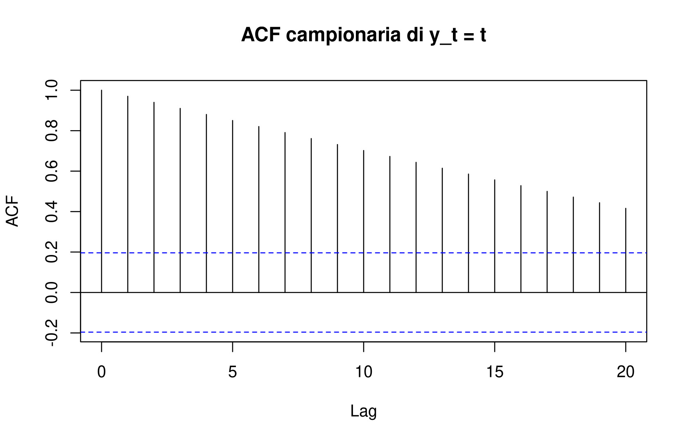
Al termine di questo capitolo dovresti essere in grado di:
Le due lezioni precedenti hanno costruito un intero vocabolario per lavorare con le serie storiche — decomposizione, ACF, smoothing esponenziale, famiglia ETS — senza mai chiedersi esplicitamente da quale modello probabilistico provenissero le osservazioni \((y_t)_{t=1,\ldots,T}\). Abbiamo usato ripetutamente l’ipotesi che gli errori di previsione \(\varepsilon_t\) fossero i.i.d. \(\mathcal N(0,\sigma^2)\) — è quello che ci ha permesso, nel capitolo 10, di dire che minimizzare la somma dei quadrati degli errori (SSE) equivale a stimare per massima verosimiglianza (MLE). Ma non abbiamo mai detto esplicitamente quale distribuzione probabilistica generasse le osservazioni \(y_t\) stesse.
Questo capitolo chiude il cerchio: introduce i processi stocastici come modello probabilistico esplicito per una serie storica, la nozione di stazionarietà che rende sensato stimare quantità teoriche dai dati, e infine la classe di modelli ARIMA/SARIMA, che formalizza — con un punto di vista leggermente diverso ma imparentato — la stessa idea di “previsione ricorsiva basata su innovazioni” già incontrata con ETS.
Rispetto ai capitoli precedenti, qui la teoria è più densa: serve più matematica per costruire gli strumenti giusti. Ma la ricompensa è una classe di modelli molto più flessibile di ETS, capace di adattarsi a strutture di dipendenza complesse. È anche, non a caso, l’ultima lezione “di teoria nuova” del corso: chiude sia il blocco sulle serie storiche sia, idealmente, l’intero percorso — motivo per cui il capitolo termina con un breve bilancio complessivo.
Nella regressione (capitoli 6-8) abbiamo sempre assunto che le coppie \((x_i, y_i)\) fossero estratte in modo indipendente e identicamente distribuito (i.i.d.) da una distribuzione congiunta ignota \(P(X,Y)\). È un’assunzione centrale: è quella che permette di parlare di errore di generalizzazione, di applicare la cross-validation, di dare un significato probabilistico ai minimi quadrati.
Per una serie storica, questa stessa assunzione sarebbe troppo forte. Se le osservazioni \(y_1, y_2, \ldots, y_T\) fossero davvero indipendenti tra loro, non ci sarebbe alcuna struttura temporale da sfruttare: sapere che \(y_{100}\) è alto non direbbe nulla su \(y_{101}\), e ogni previsione basata sul passato sarebbe vana quanto indovinare il prossimo lancio di una moneta equa guardando i lanci precedenti. Ma è esattamente la dipendenza temporale — l’idea che le osservazioni vicine nel tempo si assomiglino o si influenzino — a rendere sensato il problema stesso di “prevedere il futuro dal passato”. Dobbiamo quindi sostituire l’ipotesi di indipendenza con qualcosa di più adeguato: un modello probabilistico che ammetta esplicitamente dipendenza tra le osservazioni successive.
Un processo stocastico \((Y_t)_{t=1,\ldots,T}\) è una collezione di variabili aleatorie reali indicizzate nel tempo.
Il processo si dice gaussiano se, per ogni sottoinsieme finito di istanti \(t_1,\ldots,t_k\), il vettore \((Y_{t_1},\ldots,Y_{t_k})\) ha distribuzione normale multivariata (in particolare, ogni singola \(Y_t\) è gaussiana).
Le osservazioni \(y_t\) che abbiamo sempre maneggiato finora vengono ora reinterpretate come realizzazioni — un’unica traiettoria osservata — di queste variabili aleatorie sottostanti. Da qui in avanti useremo sistematicamente la convenzione notazionale: lettera minuscola \(y_t\) per il dato osservato, lettera maiuscola \(Y_t\) per la variabile aleatoria che lo genera. È lo stesso passaggio concettuale già familiare dalla regressione, dove si distingue l’osservazione \(y_i\) dalla variabile aleatoria \(Y\) di cui è una realizzazione — qui applicato a un intero indice temporale invece che a un singolo campione i.i.d.
Un modo utile per capire perché “basta” specificare media e struttura di covarianza è ricordare i vettori aleatori gaussiani multivariati: per descrivere completamente un vettore gaussiano \((Z_1,\ldots,Z_k)\) non serve altro che il vettore delle medie e la matrice delle covarianze. Un processo gaussiano è, in un certo senso, la naturale estensione di questa idea a un numero (potenzialmente infinito) di istanti temporali: la sua intera distribuzione è determinata dalla funzione di media e dalla funzione di autocovarianza, che generalizzano il vettore delle medie e la matrice di covarianza a un indice continuo (o comunque arbitrariamente lungo) di tempi.
Per un processo stocastico \((Y_t)_{t=1,\ldots,T}\) si definiscono:
Se il processo è gaussiano, \(m(\cdot)\) e \(C(\cdot,\cdot)\) lo determinano completamente: non serve altra informazione per conoscere l’intera legge congiunta di \((Y_1,\ldots,Y_T)\).
Alcuni libri di testo — incluso quello di riferimento del corso — usano la lettera \(H\) al posto di \(C\) (o \(\gamma\), che vedremo tra poco) per indicare l’intervallo temporale nella funzione di autocovarianza stazionaria. È solo una questione di notazione: in questo libro manteniamo la notazione delle slide (\(C\), \(\gamma\)), ma è utile sapere che la lettera può cambiare da un testo all’altro.
\(C(s,t)\) misura quanto \(Y_s\) e \(Y_t\) “si muovono insieme”: valori positivi indicano che quando una è sopra la sua media tende ad esserlo anche l’altra, valori negativi il contrario, valori vicini a zero (dopo normalizzazione tramite \(\rho\)) indicano scarsa dipendenza lineare. La normalizzazione in \(\rho(s,t)\) serve esattamente come nella correlazione di Pearson vista nel capitolo 3: rende la quantità adimensionale e compresa tra \(-1\) e \(1\), permettendo confronti tra serie di scale diverse.
Immagina di avere a disposizione una sola traiettoria osservata \(y_1,\ldots,y_T\) di un processo stocastico. Come puoi stimare \(C(s,t)\) per una coppia specifica \((s,t)\)? Con una sola osservazione per ogni \(Y_t\), non hai alcuna replica su cui calcolare una media empirica — la definizione di \(C(s,t) = \operatorname{Cov}(Y_s,Y_t)\) richiederebbe, in linea di principio, molte traiettorie indipendenti dello stesso processo, che quasi mai abbiamo a disposizione nella pratica (raramente possiamo “riavvolgere il nastro” e osservare più volte l’andamento del PIL italiano nel 2020).
La stazionarietà è la proprietà che risolve questo problema: se il processo è stazionario, la sua struttura di dipendenza non cambia nel tempo, e allora possiamo “riciclare” le diverse porzioni della singola traiettoria osservata come se fossero repliche approssimative, mediando su tutte le coppie \((y_t, y_{t+h})\) a distanza \(h\) per stimare un’unica funzione \(\gamma(h)\). È in questo senso preciso che, come insiste il docente a lezione, la stazionarietà è la chiave che collega il mondo teorico (il processo) con il mondo osservato (i dati): senza di essa, non c’è alcuna garanzia che le quantità calcolate sui dati abbiano un rapporto sensato con le quantità teoriche che vorremmo stimare.
Un processo stocastico \((Y_t)_{t=1,\ldots,T}\) è stazionario (in senso debole) se:
In questo caso si definisce la funzione di autocovarianza stazionaria \[ h \mapsto \gamma(h) = C(h) = \operatorname{Cov}(Y_t, Y_{t+h}), \] che non dipende più da \(t\) ma solo dal ritardo (lag) \(h\).
Da notare che chiedere solo covarianza costante nel ritardo (e non, ad esempio, l’intera distribuzione congiunta invariante per traslazioni temporali) è già una richiesta piuttosto forte, ma non è “troppo”: è la nozione minima che rende utilizzabili gli stimatori campionari che vedremo tra poco.
Intuitivamente, un processo stazionario ha proprietà statistiche invarianti per traslazioni temporali: se sposti l’origine del tempo di un anno, di una settimana o di due giorni, le medie, le varianze e le correlazioni restano le stesse. Trend e stagionalità (che per definizione cambiano il comportamento medio o la variabilità nel tempo) non sono ammessi in un processo stazionario; una componente ciclica o puramente di rumore, invece, è compatibile con la stazionarietà.
Consideriamo il processo deterministico \(Y_t = t\): ogni \(Y_t\) è, con probabilità 1, uguale al numero \(t\) — non c’è alcuna aleatorietà. Chiediamoci: è un processo stazionario?
Prima di calcolare: cosa ti aspetti guardando una serie con un trend lineare così evidente? È ragionevole aspettarsi covarianza teorica alta, bassa, o nulla?
Calcoliamo. Poiché \(Y_t = t\) è deterministico (nessuna variabilità), \(\operatorname{Var}(Y_t) = 0\) per ogni \(t\), e quindi anche \(C(s,t) = \operatorname{Cov}(Y_s,Y_t) = 0\) per ogni coppia \((s,t)\) con \(s\ne t\): la covarianza teorica è identicamente nulla. Ma se calcoli la funzione di autocorrelazione campionaria su una realizzazione osservata \(y_t = t\), ottieni un grafico con una fortissima autocorrelazione a tutti i ritardi — quello che nel gergo si chiama un ACF “a banda”, che decade lentissimamente.
library(forecast)
library(ggplot2)
t <- 1:100
y <- ts(t)
acf(y, main = "ACF campionaria di y_t = t")
Il paradosso è solo apparente. La covarianza teorica \(C(s,t)\) è zero perché non c’è alcuna aleatorietà nel processo: \(\operatorname{Cov}\) misura la co-variabilità attorno alla media, e qui non c’è variabilità affatto. La forte autocorrelazione campionaria, invece, riflette semplicemente il fatto che una serie con trend crescente ha valori sistematicamente sopra la media empirica \(\bar y\) nella seconda metà del campione e sistematicamente sotto nella prima metà: lo stimatore \(\hat\gamma(h)\), che confronta \((y_t - \bar y)\) con \((y_{t-h}-\bar y)\), “vede” questa struttura e la registra come correlazione, anche se non esiste alcuna vera dipendenza probabilistica da stimare (perché il processo non è stocastico!). Questo è l’esempio più chiaro di non-stazionarietà “silenziosa”: la teoria dice zero, l’osservazione empirica dice tutt’altro. Il messaggio pratico è che una ACF campionaria “a banda” non è di per sé una prova di dipendenza stocastica forte: è, molto spesso, semplicemente il sintomo di un trend (o di un’altra forma di non-stazionarietà) che va prima rimosso.
Giudicare la stazionarietà “a occhio” da una singola traiettoria è, in generale, difficile quanto giudicare l’indipendenza di una sequenza di lanci di moneta osservandone solo gli esiti (testa, croce, testa, testa, croce, …) o l’indipendenza di estrazioni da un’urna vedendo solo la sequenza dei colori estratti. In entrambi i casi, la sola sequenza di simboli non “dimostra” nulla: servono ipotesi di partenza e, quando possibile, un test statistico a supporto. È lo stesso motivo per cui, più avanti in questo capitolo, introduciamo test di stazionarietà formali invece di affidarci solo all’ispezione grafica — anche se quest’ultima resta un primo passo utile e non va scartata.
acf()Data una serie storica osservata \((y_t)_{t=1,\ldots,T}\), proveniente da un processo stazionario, la funzione di autocovarianza teorica \(\gamma(h)\) si stima con
\[ \hat\gamma(h) = \frac{1}{T-h} \sum_{t=h+1}^{T} (y_t - \bar y)(y_{t-h} - \bar y), \] e la corrispondente autocorrelazione stimata \[ \hat\rho(h) = \frac{\hat\gamma(h)}{\hat\gamma(0)}. \]
\(\hat\rho(h)\) è esattamente ciò che calcola il comando acf() in R (già usato nel capitolo 9, ma senza esplicitare a quale quantità teorica corrispondesse).
Lo stimatore \(\hat\gamma(h)\) è, a meno di dettagli sul denominatore, la covarianza campionaria tra la serie \((y_t)\) e la sua versione ritardata di \(h\) passi, \(L^h y\). Richiamando i risultati dello Statistica I: \(\hat\gamma(h)\) è uno stimatore non distorto della quantità teorica \(\gamma(h)\), e — sotto ipotesi non troppo restrittive — anche consistente quando \(T \to \infty\) a \(h\) fissato. Questo è precisamente il “ponte” annunciato sopra tra teoria e dati: se il processo è davvero stazionario, possiamo fidarci che l’ACF campionaria che leggiamo su un grafico sia una buona approssimazione della struttura di dipendenza teorica.
set.seed(1)
y <- arima.sim(model = list(ar = 0.6), n = 200)
acf(y, main = "ACF campionaria di un AR(1) stazionario con alpha=0.6")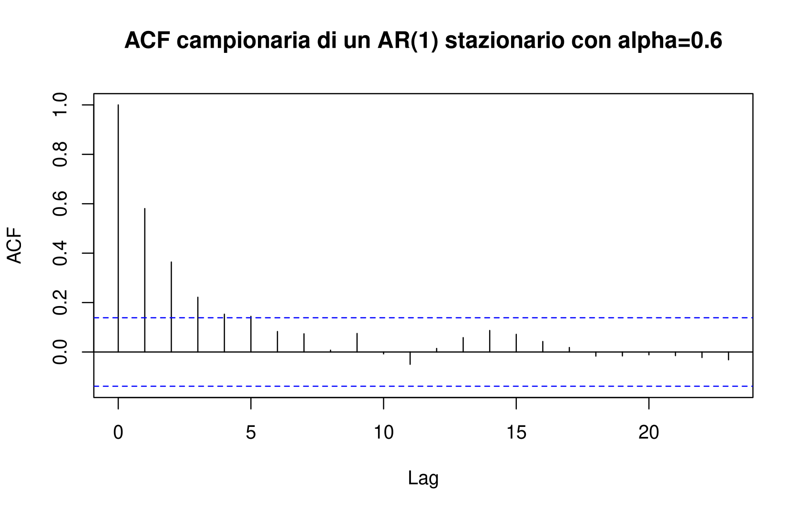
Confronta questo grafico con quello dell’esempio \(Y_t=t\) appena visto: qui l’ACF decade rapidamente verso zero, come ci si aspetta da un processo stazionario con dipendenza a breve raggio; nell’esempio del trend deterministico, l’ACF restava alta a lungo, sintomo di non-stazionarietà.
Le serie storiche reali quasi mai sono stazionarie: hanno trend, stagionalità, varianza che cambia nel tempo. Serve quindi uno strumento pratico per “avvicinarsi” alla stazionarietà prima di applicare gli strumenti teorici appena introdotti — un’operazione già incontrata di sfuggita nel capitolo 9, dove la differenziazione veniva usata in modo puramente euristico per far emergere più chiaramente i picchi stagionali nella ACF. Ora la formalizziamo come strumento generale per raggiungere la stazionarietà.
La differenziazione (semplice) di una serie è \[ \operatorname{diff}(y) = y - Ly, \] dove \(L\) è l’operatore di ritardo (lag) già incontrato nel capitolo 9 (il testo di riferimento del corso usa talvolta la lettera \(B\) per lo stesso operatore).
La differenziazione stagionale di periodo \(s\) è \[ \operatorname{diff}_s(y) = y - L^s y. \]
Si può dimostrare (non lo vediamo nei dettagli) che se la serie originale proviene da un processo stazionario, anche la serie differenziata lo è: differenziare non distrugge mai la stazionarietà, e in pratica la migliora quando la serie di partenza aveva un trend. Un trend lineare, dopo una differenziazione, diventa (approssimativamente) una costante; un trend quadratico richiede due differenziazioni; uno cubico tre, e così via. La differenziazione stagionale, analogamente, attenua (anche se non elimina sempre del tutto) la componente stagionale.
AirPassengers passo per passoPrima di ogni trasformazione, chiediti: questa serie sembra ormai stazionaria, o restano trend/stagionalità visibili?
library(forecast)
AP <- AirPassengers
d_AP <- diff(AP) # una differenziazione
d2_AP <- diff(d_AP) # due differenziazioni
ds_AP <- diff(AP, lag = 12) # differenziazione stagionale
ds2_AP <- diff(ds_AP) # diff stagionale + diff semplice
dlog_AP <- diff(log(AP)) # diff del logaritmo (stabilizza anche la varianza)
autoplot(AP, main = "Serie originale")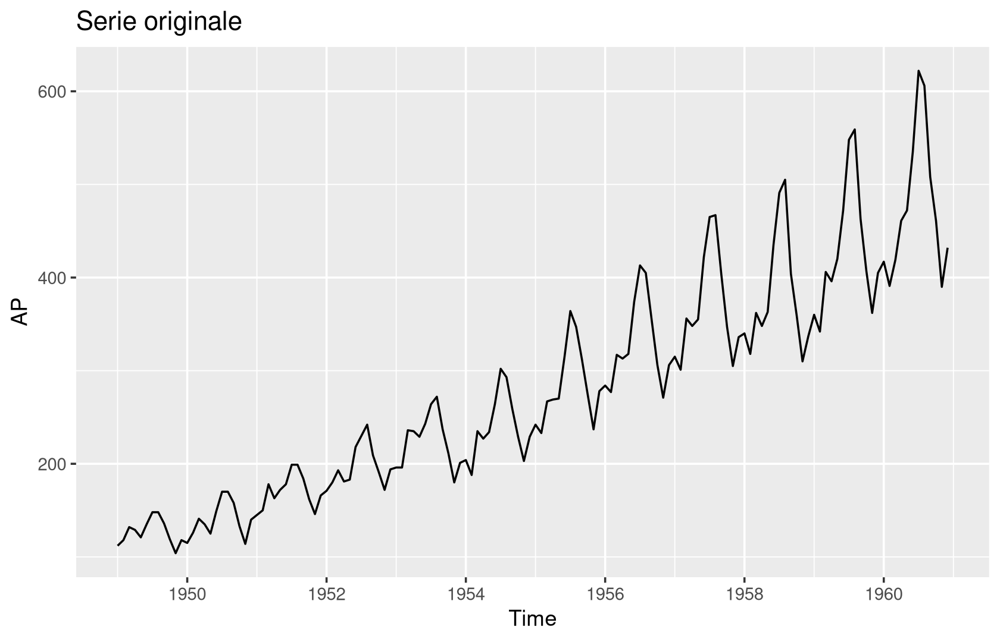
autoplot(d_AP, main = "Serie differenziata")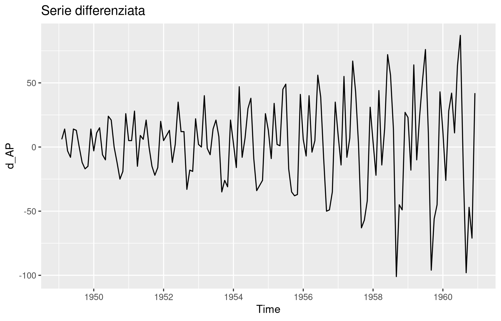
autoplot(d2_AP, main = "Serie differenziata due volte")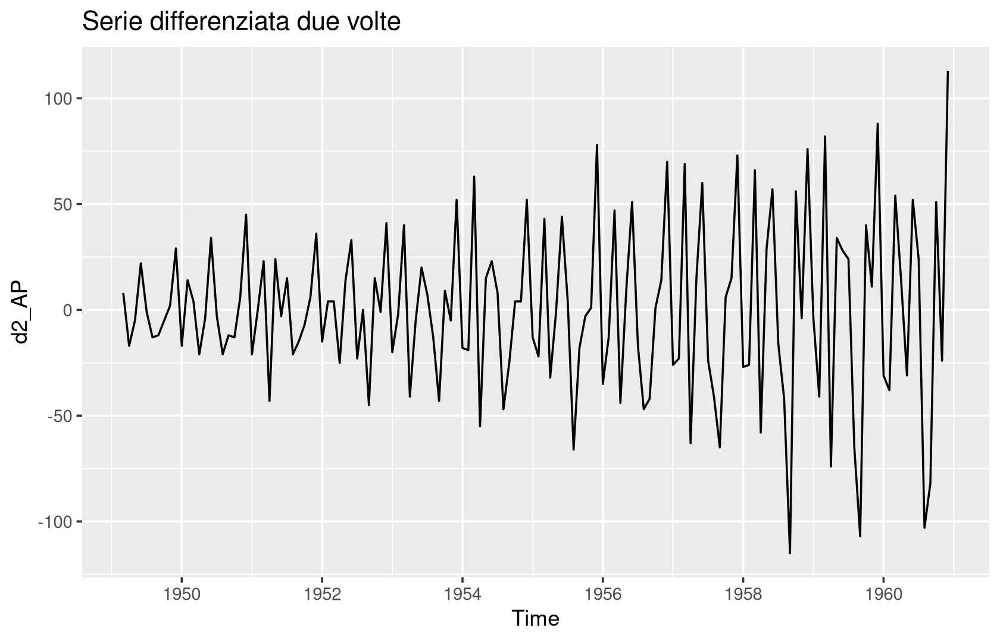
autoplot(ds_AP, main = "Serie con differenziazione stagionale")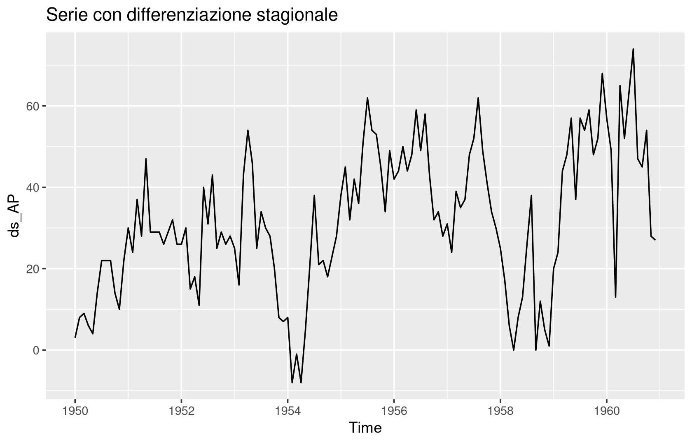
autoplot(ds2_AP, main = "Diff stagionale + diff semplice")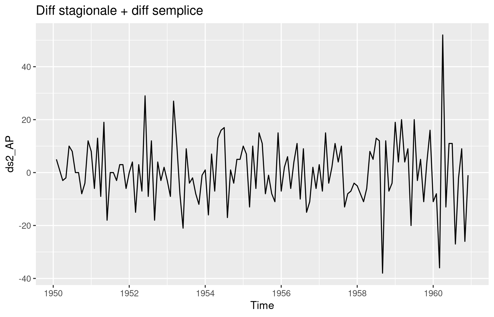
autoplot(dlog_AP, main = "Diff del logaritmo")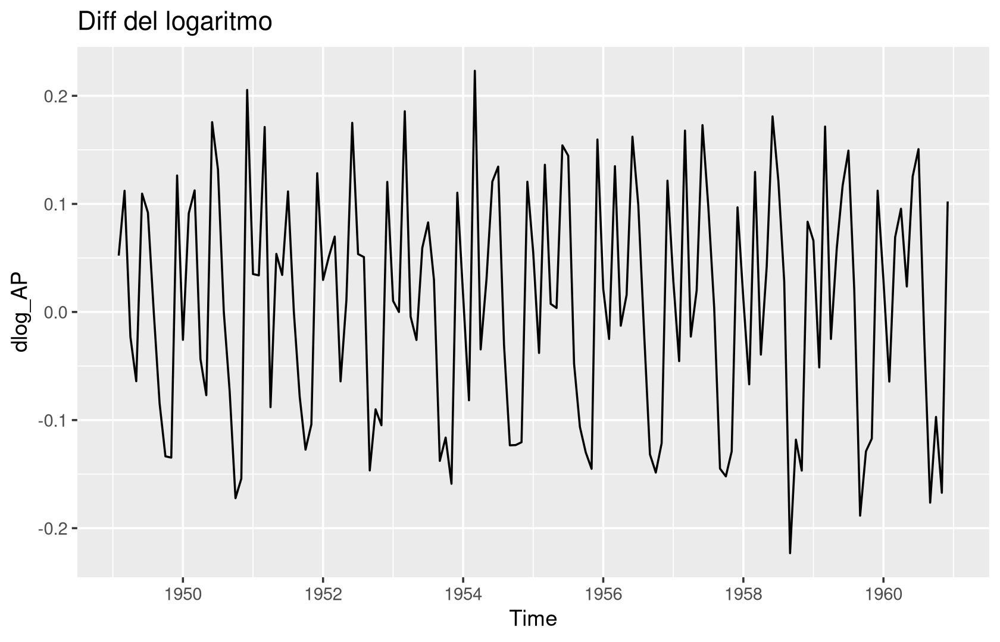
La serie originale mostra un trend crescente evidente e una stagionalità che, essendo moltiplicativa, si amplifica nel tempo: chiaramente non stazionaria. Dopo una differenziazione il trend è quasi rimosso, ma resta una stagionalità visibile e una varianza crescente. Dopo la differenziazione stagionale, la stagionalità è attenuata ma un residuo di trend può ancora essere presente, “con riserva” — un giudizio grafico che, come vedremo, la sezione seguente permette di verificare formalmente con un test. La combinazione diff + diff stagionale, o la differenziazione del logaritmo (che affronta contemporaneamente il problema della varianza crescente, esattamente come nel capitolo 9), tende a produrre l’aspetto più vicino alla stazionarietà.
Differenziare troppe volte butta via informazione: ogni differenziazione riduce la lunghezza utilizzabile della serie e trasforma il segnale, allontanandolo dai dati originali. L’obiettivo non è “differenziare finché il test non dice stazionario a tutti i costi”, ma trovare il numero minimo di differenziazioni che rende la serie ragionevolmente stazionaria. Un numero eccessivo di differenziazioni introduce anch’esso artefatti (ad esempio un’autocorrelazione negativa spuria al primo ritardo) ed è una fonte comune di modelli ARIMA mal specificati, come vedremo più avanti con auto.arima().
L’ispezione grafica aiuta, ma resta soggettiva: due persone potrebbero disaccordare su se una serie “sembra ancora avere un trend” oppure no. Servono criteri più oggettivi — dei test statistici — analogamente a quanto già fatto nel capitolo 10 per verificare la gaussianità dei residui con Shapiro-Wilk e Jarque-Bera.
Esistono due famiglie di test con ipotesi nulle opposte:
Questo è probabilmente il punto metodologico più insidioso dell’intero capitolo: KPSS e PP/ADF hanno ipotesi nulle opposte. Un \(p\)-value basso significa cose diverse a seconda del test:
Applicare meccanicamente la regola “\(p<0.05\) vuol dire non stazionaria” a un test PP/ADF porta a una conclusione esattamente rovesciata. La regola pratica, valida qui come per ogni test statistico incontrato nel corso, è: prima di interpretare un \(p\)-value, controlla sempre qual è l’ipotesi nulla di quello specifico test.
AirPassengers e le sue trasformatelibrary(feasts) # unitroot_kpss(), unitroot_pp()
serie <- list(
"Originale" = AP,
"Diff" = d_AP,
"Diff 2 volte" = d2_AP,
"Diff stagionale" = ds_AP,
"Diff e diff stagionale" = ds2_AP,
"diff(log())" = dlog_AP
)
risultati <- data.frame(
Serie = names(serie),
KPSS_p = sapply(serie, function(x) unitroot_kpss(x)[2]),
PP_p = sapply(serie, function(x) unitroot_pp(x)[2])
)
risultati$KPSS_decisione <- ifelse(risultati$KPSS_p < 0.05, "Non staz.", "Stazionaria")
risultati$PP_decisione <- ifelse(risultati$PP_p < 0.05, "Stazionaria", "Non staz.")
print(risultati, digits = 4) Serie KPSS_p PP_p
Originale.kpss_pvalue Originale 0.01000 0.10
Diff.kpss_pvalue Diff 0.10000 0.01
Diff 2 volte.kpss_pvalue Diff 2 volte 0.10000 0.01
Diff stagionale.kpss_pvalue Diff stagionale 0.01666 0.01
Diff e diff stagionale.kpss_pvalue Diff e diff stagionale 0.10000 0.01
diff(log()).kpss_pvalue diff(log()) 0.10000 0.01
KPSS_decisione PP_decisione
Originale.kpss_pvalue Non staz. Non staz.
Diff.kpss_pvalue Stazionaria Stazionaria
Diff 2 volte.kpss_pvalue Stazionaria Stazionaria
Diff stagionale.kpss_pvalue Non staz. Stazionaria
Diff e diff stagionale.kpss_pvalue Stazionaria Stazionaria
diff(log()).kpss_pvalue Stazionaria StazionariaSulla serie originale, entrambi i test concordano: KPSS rifiuta la stazionarietà e PP/ADF non la conferma — coerente col trend evidente. Dopo differenziazione semplice e, ancora di più, dopo diff(log()), i due test tendono a concordare su “stazionaria”. Ma su alcune trasformazioni intermedie (tipicamente la differenziazione stagionale da sola) può capitare che i due test disaccordino: uno dice stazionaria, l’altro no. Questo non è un errore di calcolo, ma un caso reale in cui l’evidenza empirica è ambigua. Esattamente come per la verifica di gaussianità dei residui nel capitolo 10 (dove si raccomandava di usare più test insieme, ad esempio Shapiro-Wilk e Jarque-Bera, proprio perché nessun singolo test è infallibile), avere più indicatori — anche quando non concordano perfettamente — dà più fiducia complessiva nel giudizio finale rispetto ad affidarsi a un solo test.
Nel capitolo 9 abbiamo introdotto la decomposizione additiva \(y_t = T_t + S_t + R_t\) e il modo di stimare la componente stagionale \(S_t\) una volta noto il trend \(T_t\), mediando sulla sottoserie stagionale al netto del trend: \[ S_t = \frac{1}{N}\sum_{i=0}^{N-1} (y_{t-is} - T_{t-is}). \] Ma non avevamo ancora specificato come stimare il trend \(T_t\) stesso: questa lezione completa quel discorso rimasto in sospeso con il metodo delle medie mobili (moving average).
Una media mobile semplice e centrata, di lunghezza \(2q+1\), è \[ MA_t = \frac{1}{2q+1} \sum_{j=-q}^{q} y_{t-j}. \]
Pensa a una media mobile come a un filtro passa-basso: le oscillazioni che avvengono su scale temporali brevi rispetto alla finestra \(2q+1\) (le “alte frequenze” — tipicamente il rumore) tendono a compensarsi nella media e scompaiono; le oscillazioni lente rispetto alla finestra (le “basse frequenze” — trend e ciclo) sopravvivono sostanzialmente intatte. Per questo la media mobile è un ottimo stimatore del trend: \(T_t \approx MA_t\). Il comando decompose() di R usa proprio una media mobile con \(q\) pari alla metà della periodicità (ad esempio \(q=6\) o una finestra di lunghezza 12 per dati mensili con stagionalità annuale).
Scegliere la larghezza della finestra è, di nuovo, un compromesso: una finestra troppo stretta lascia passare troppo rumore; una troppo larga finisce per appiattire tutto verso la media globale della serie, cancellando anche variazioni di trend genuine. È lo stesso tipo di compromesso — non identico, ma imparentato — al trade-off bias-varianza incontrato ripetutamente nei capitoli su KNN, regolarizzazione e selezione del modello.
dec_AP <- decompose(AirPassengers, type = "additive")
autoplot(AirPassengers, main = "AirPassengers e trend stimato con media mobile") +
autolayer(dec_AP$trend, linewidth = 1) +
theme(legend.position = "none")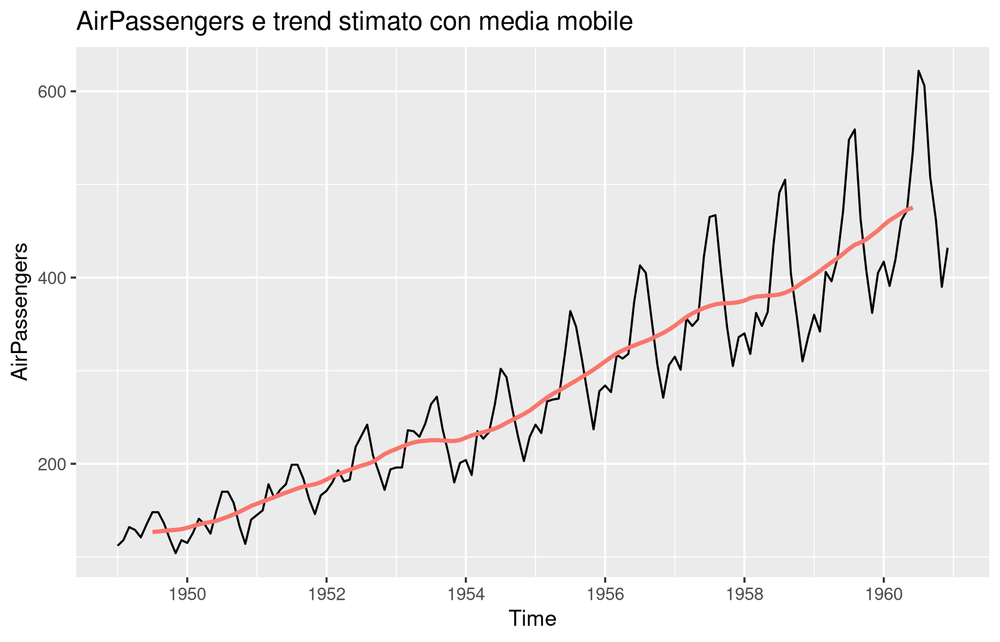
dec_nottem <- decompose(nottem, type = "additive")
autoplot(nottem, main = "nottem e trend stimato con media mobile") +
autolayer(dec_nottem$trend, linewidth = 1) +
theme(legend.position = "none")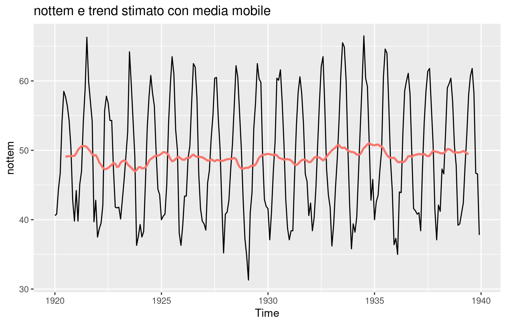
Una media mobile generale (o pesata) di semi-ampiezza \(q\) ha la forma \[ MA_t = \sum_{j=-q}^{q} w_j\, y_{t-j}, \qquad w_j \ge 0, \qquad \sum_{j=-q}^q w_j = 1. \]
Un caso particolare importante è la media mobile sinistra (solo passato), con \(w_j = \frac{1}{q+1}\) per \(j = 0,\ldots,q\) e \(w_j = 0\) per \(j<0\).
ma_sim <- stats::filter(AirPassengers, rep(1/13, 13), sides = 2) # centrata
ma_left <- stats::filter(AirPassengers, rep(1/13, 13), sides = 1) # solo passato
autoplot(AirPassengers, main = "Media mobile simmetrica vs sinistra") +
autolayer(ma_sim, series = "Simmetrica", linewidth = 1) +
autolayer(ma_left, series = "Sinistra", linewidth = 1) +
theme(legend.position = "bottom")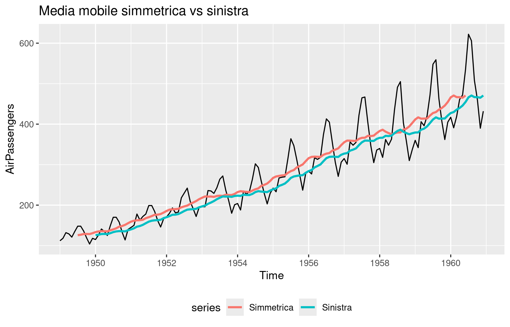
Osserva le due curve stimate: la media mobile simmetrica (sides=2) è più liscia e centrata sul valore corrente, ma non può essere calcolata negli ultimi \(q\) e nei primi \(q\) istanti della serie, perché mancano osservazioni simmetriche. La media mobile sinistra (sides=1) arriva invece fino all’ultima osservazione disponibile — utile per stimare il trend “in tempo reale” — ma sacrifica i primi \(q\) istanti e introduce un piccolo ritardo di fase rispetto all’andamento vero, perché guarda solo indietro nel tempo.
La perdita di osservazioni ai bordi della serie è un limite pratico intrinseco della media mobile centrata. È proprio questa limitazione a motivare metodi di decomposizione più moderni come STL (già incontrato nel capitolo 9): STL non usa una media mobile in senso stretto, ma una procedura di stima (basata su regressioni locali, loess) che sfrutta tutte le osservazioni disponibili, in uno spirito simile alla media mobile sinistra ma senza sacrificarne la simmetria dove possibile.
stats::filter(..., sides=2) ai bordi della serie, e perché la versione sides=1 non ha lo stesso problema all’estremità finale?Abbiamo ora tutti gli ingredienti — stazionarietà, differenziazione, ACF — per costruire una classe di modelli probabilistici espliciti per serie stazionarie (o rese tali per differenziazione): i modelli ARIMA (AutoRegressive Integrated Moving Average).
Esistono due punti di vista equivalenti, ma concettualmente distinti, per descrivere questi modelli:
Seguiamo prima il punto di vista delle innovazioni, e vedremo poi come ne discenda naturalmente il secondo.
Il punto di vista delle innovazioni è, nello spirito, molto simile a quello usato per ETS e Holt-Winters (capitolo 10): anche lì l’osservazione era descritta come combinazione dell’errore di previsione corrente e dello stato precedente. La differenza principale è che ARIMA usa solo combinazioni lineari: non ha equivalente delle equazioni moltiplicative di ETS (errore, trend o stagionalità moltiplicativi), che gli ARIMA possono ottenere solo indirettamente tramite trasformazioni come il logaritmo. Torneremo su questo punto nel confronto finale.
Un modello autoregressivo di ordine \(p\), \(\mathrm{AR}(p)\), è definito da \[ Y_t = \alpha_1 Y_{t-1} + \cdots + \alpha_p Y_{t-p} + \varepsilon_t, \] con \((\alpha_i)_{i=1,\ldots,p} \in \mathbb R^p\) parametri del modello e \((\varepsilon_t)\) rumore bianco i.i.d. \(\mathcal N(0,\sigma^2)\).
Notazione compatta con l’operatore di ritardo \(L\): posto \[ \mathbf p(L) := 1 - \alpha_1 L - \alpha_2 L^2 - \cdots - \alpha_p L^p, \] il modello si scrive \(\mathbf p(L)\,Y = \varepsilon\).
Condizione di stazionarietà: tutte le radici (eventualmente complesse) di \(\mathbf p(z)=0\) devono soddisfare \(|z|>1\) (essere esterne al disco unitario).
Il caso \(p=1\), \(Y_t = \alpha_1 Y_{t-1} + \varepsilon_t\), è particolarmente istruttivo: è equivalente a SES/ETS(A,N,N) incontrato nel capitolo 10 (a meno di riparametrizzazione). Il parametro \(\alpha_1\) gioca un ruolo simile al complemento del parametro di smoothing \(\alpha\) della SES: valori vicini a \(1\) (in modulo) producono un processo con dipendenza molto persistente, che “ricorda” a lungo i valori passati; valori vicini a \(0\) producono un processo che dimentica rapidamente il passato, quasi rumore bianco.
Per \(p=1\), la condizione di stazionarietà \(|z|>1\) per la radice di \(\mathbf p(z)=1-\alpha_1 z\) equivale semplicemente a \(|\alpha_1|<1\): è la stessa condizione, familiare da Statistica I, che garantisce la convergenza di una serie geometrica di ragione \(\alpha_1\).
Prima di calcolare: se aumenti \(\alpha\) da \(0.2\) a \(0.9\), ti aspetti che le traiettorie diventino visivamente più “lisce” (persistenti) o più “rumorose” (erratiche)? E l’ACF, ti aspetti che decada più rapidamente o più lentamente?
set.seed(123)
par(mfrow = c(1, 3))
for (a in c(0.2, 0.6, 0.9)) {
y <- arima.sim(model = list(ar = a), n = 200)
plot(y, main = paste0("AR(1), alpha=", a))
}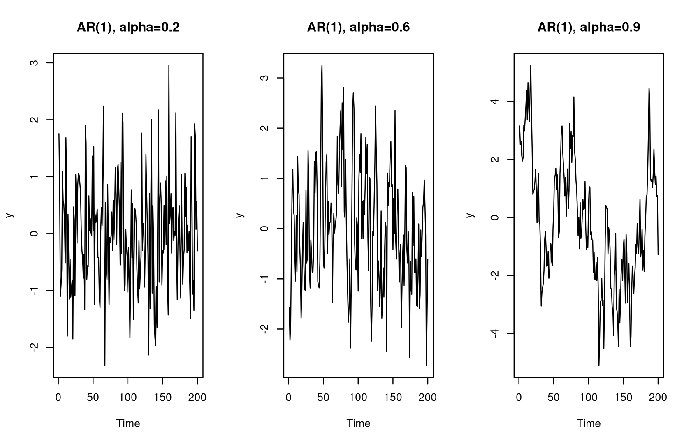
set.seed(123)
for (a in c(0.2, 0.6, 0.9)) {
y <- arima.sim(model = list(ar = a), n = 200)
print(ggAcf(y, main = paste0("ACF, AR(1) alpha=", a)))
}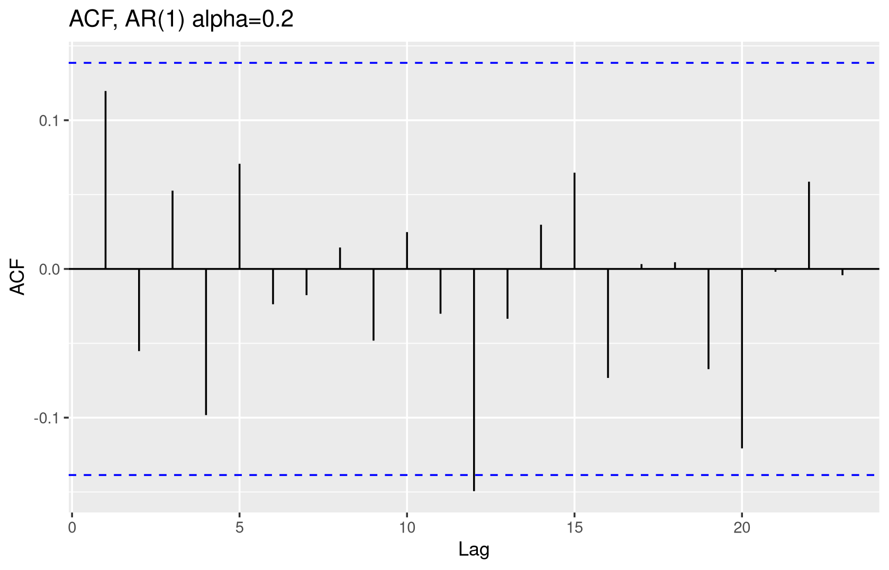
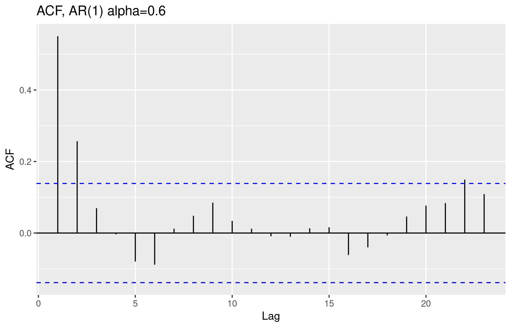
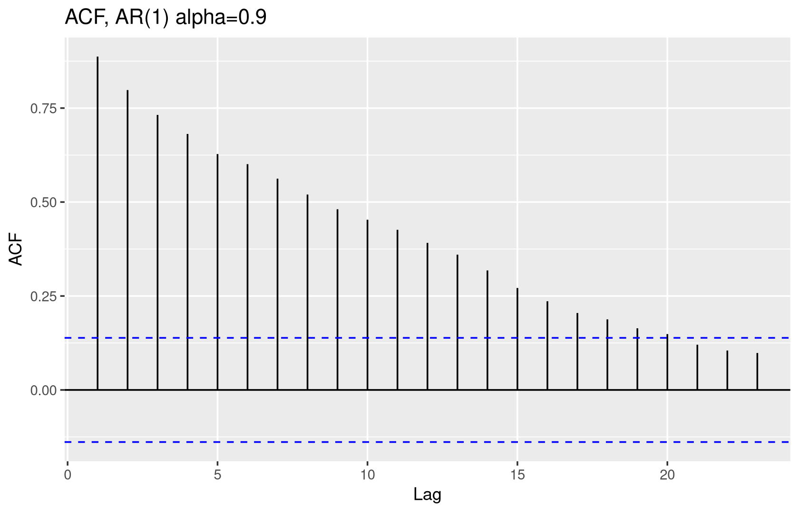
Confrontiamo poi con l’esempio delle slide, un AR(1) con \(\alpha=-0.7\) e un AR(2) con \(\alpha_1=0.7,\ \alpha_2=-0.3\):
set.seed(123)
ar1_neg <- arima.sim(model = list(ar = -0.7), n = 200)
autoplot(ar1_neg, main = "AR(1) simulato, alpha=-0.7")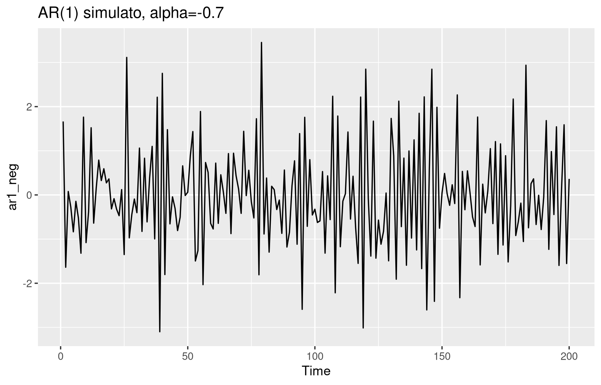
set.seed(123)
ar2 <- arima.sim(model = list(ar = c(0.7, -0.3)), n = 200)
autoplot(ar2, main = "AR(2) simulato, alpha=(0.7,-0.3)")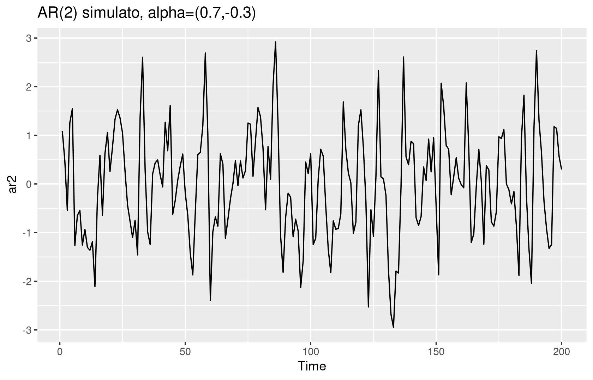
Dopo il calcolo: al crescere di \(\alpha\) verso \(1\), le traiettorie diventano visibilmente più persistenti (più “lisce”, con oscillazioni ampie e lente), e la ACF decade sempre più lentamente — coerentemente con l’idea che \(\alpha\) vicino a \(1\) corrisponde a un processo “quasi non stazionario” (al limite \(\alpha=1\) è il random walk, che vedremo tra poco è effettivamente non stazionario). Un \(\alpha\) negativo, come nell’esempio \(\alpha=-0.7\), produce invece una serie che oscilla rapidamente segno su segno, perché ogni osservazione tende a essere di segno opposto rispetto a quella precedente.
Un modello a media mobile di ordine \(q\), \(\mathrm{MA}(q)\), è definito da \[ Y_t = \varepsilon_t + \beta_1 \varepsilon_{t-1} + \cdots + \beta_q \varepsilon_{t-q}, \] con \((\beta_j)_{j=1,\ldots,q}\in\mathbb R^q\) parametri e \((\varepsilon_t)\) rumore bianco i.i.d. \(\mathcal N(0,\sigma^2)\).
Notazione compatta: posto \(\mathbf q(L) := 1+\beta_1 L + \cdots + \beta_q L^q\), il modello si scrive \(Y = \mathbf q(L)\,\varepsilon\).
Un modello MA(q) è sempre stazionario, per qualunque scelta dei coefficienti \(\beta_j\).
Il nome “media mobile” è condiviso, ma i due concetti sono diversi: la media mobile della sezione precedente è uno strumento di lisciamento applicato ai dati osservati \(y_t\) per stimarne il trend; il modello \(\mathrm{MA}(q)\) è invece un modello generativo per il processo \((Y_t)\), dove la combinazione lineare è fatta sui rumori passati \(\varepsilon_{t-j}\), non sulle osservazioni passate. La coincidenza terminologica è storica, non concettuale.
set.seed(123)
ma3 <- arima.sim(model = list(ma = c(0.5, 0.3, 1)), n = 200)
autoplot(ma3, main = "MA(3) simulato")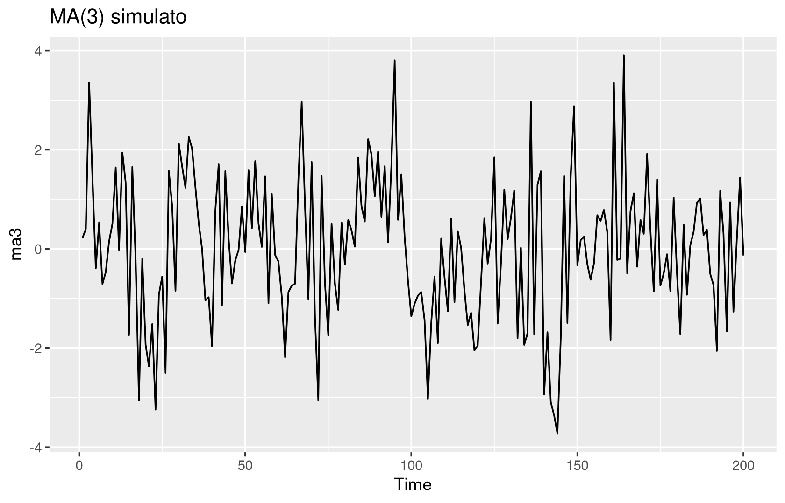
set.seed(123)
ma5 <- arima.sim(model = list(ma = c(0.5, 0.3, 0.5, 0.5, 0.1)), n = 200)
autoplot(ma5, main = "MA(5) simulato")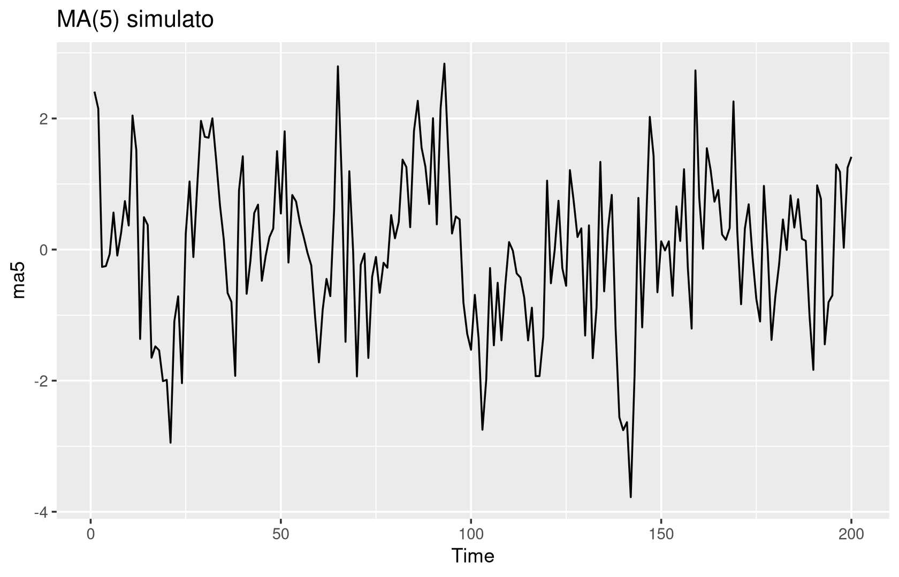
Un modello ARIMA(p,d,q) di ordini \(p,d,q\in\mathbb N\) è tale che, dopo \(d\) differenziazioni discrete \(X = (I-L)^d Y\), la serie differenziata \(X\) soddisfa \[ X_t = \sum_{i=1}^{p} \alpha_i X_{t-i} + \varepsilon_t + \sum_{j=1}^{q} \beta_j\, \varepsilon_{t-j}, \] con \((\alpha_i)_{i=1,\ldots,p}\), \((\beta_j)_{j=1,\ldots,q}\) parametri del modello e \((\varepsilon_t)\) rumore bianco i.i.d. \(\mathcal N(0,\sigma^2)\).
Notazione compatta: \(\mathbf p(L)\,(1-L)^d\, Y = \mathbf q(L)\,\varepsilon\).
Il modello è stazionario se \(d=0\) e vale la condizione di stazionarietà per l’AR(p); se \(d>0\), la serie originale \((Y_t)\) non è stazionaria, ma la serie differenziata \((X_t)\) lo è.
Non è necessario memorizzare la costruzione generale in tutti i suoi dettagli: nella pratica gli ordini \((p,d,q)\) tipici, per serie storiche reali, sono piccoli (spesso \(p,q \le 2\) e \(d\in\{0,1,2\}\)). Il punto concettuale importante è: prima si differenzia \(d\) volte fino ad avvicinarsi alla stazionarietà, poi si usa una parte autoregressiva (coefficienti \(\alpha\)) e una parte a media mobile (coefficienti \(\beta\)) per “colorare” il rumore residuo, invece di lasciarlo puramente bianco.
Un caso particolare fondamentale, sia teoricamente che storicamente, è il random walk (passeggiata aleatoria): \[ Y_t = Y_{t-1} + \varepsilon_t \quad \Longleftrightarrow \quad \mathrm{ARIMA}(0,1,0). \]
set.seed(123)
rw <- arima.sim(model = list(order = c(0, 1, 0)), n = 200)
autoplot(rw, main = "Random walk, ARIMA(0,1,0)")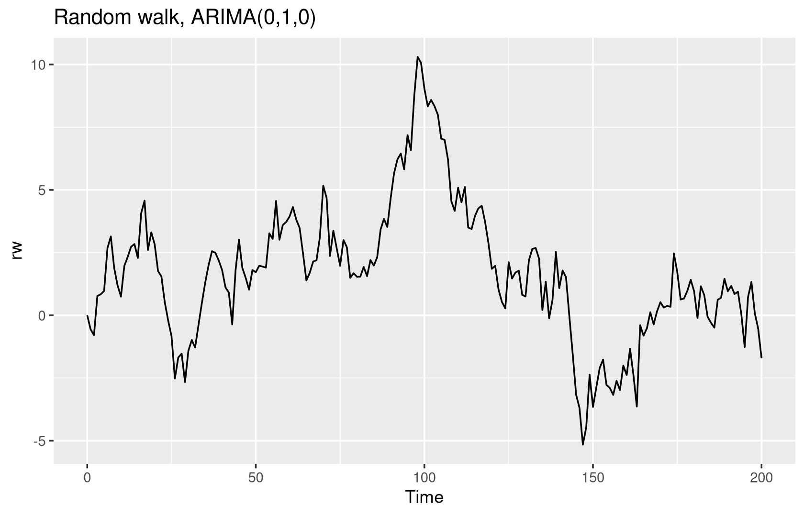
I modelli random walk sono stati storicamente tra i primissimi modelli usati — già 120-150 anni fa, e ancora affinati fino a circa 40 anni fa — per descrivere l’andamento dei prezzi azionari: l’idea è che le variazioni giornaliere di un prezzo siano essenzialmente imprevedibili, e quindi che il prezzo di domani sia il prezzo di oggi più un incremento casuale non correlato al passato. È un modello volutamente semplice, oggi affiancato da modelli più sofisticati, ma resta un punto di riferimento storico e concettuale importante.
Un fatto sottile, spesso frainteso: una specifica traiettoria simulata di random walk può “sembrare” avere un trend crescente o decrescente — semplicemente perché gli incrementi casuali si sono accumulati più spesso in una direzione durante il periodo osservato — pur essendo il processo, dal punto di vista teorico, non stazionario (e non un processo “con trend” in senso deterministico). Se applichi un test di stazionarietà a quella singola traiettoria, può persino capitare che il test concluda erroneamente “stazionaria”, perché il test valuta l’evidenza empirica su quella realizzazione specifica, non la vera natura del processo generatore. È un monito a tenere sempre distinta la proprietà del processo dalla proprietà (limitata, e potenzialmente fuorviante) di una singola realizzazione osservata.
Simuliamo ora un ARIMA(2,1,2) (attenzione: nel commento del codice sorgente delle slide compare per un refuso “ARIMA(2,2,2)”, ma sia il codice sia il commento a voce del docente confermano che si tratta di ARIMA(2,1,2) — due termini autoregressivi, una differenziazione, due termini a media mobile):
set.seed(123)
arima212 <- arima.sim(
model = list(order = c(2, 1, 2), ar = c(0.5, -0.3), ma = c(0.4, 0.2)),
n = 200
)
autoplot(arima212, main = "ARIMA(2,1,2) simulato")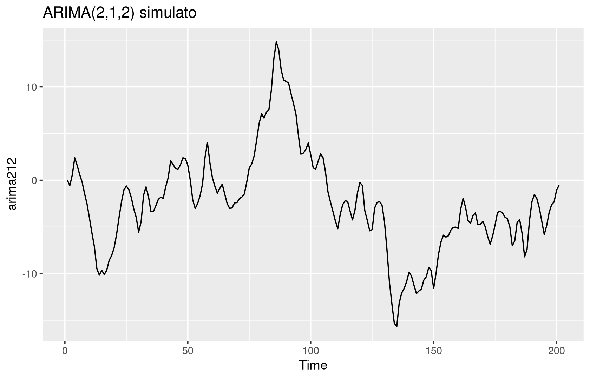
Osserva come, aumentando l’ordine complessivo del modello (più termini AR e MA), le traiettorie tendano a diventare più “lisce” e regolari — un pattern qualitativo già notato negli esempi AR e MA separati.
Gli ARIMA visti finora non modellano esplicitamente la stagionalità (se non indirettamente, tramite la differenziazione stagionale). I modelli SARIMA (Seasonal ARIMA) estendono la costruzione aggiungendo un secondo blocco di polinomi che agiscono sui ritardi stagionali.
Un modello SARIMA\((p,d,q)(P,D,Q)_s\) di periodo stagionale \(s\) si ottiene aggiungendo ai polinomi \(\mathbf p(L)\), \(\mathbf q(L)\) dei polinomi stagionali \(\mathbf P(L^s)\), \(\mathbf Q(L^s)\) e delle differenziazioni stagionali \((1-L^s)^D\): \[ \mathbf P(L^s)\,\mathbf p(L)\,(1-L)^d\,(1-L^s)^D\, Y = \mathbf Q(L^s)\,\mathbf q(L)\,\varepsilon. \]
library(astsa)
set.seed(123)
sarima_traj <- sarima.sim(d = 1, D = 1, S = 12, n = 300)
autoplot(sarima_traj, main = "SARIMA(0,1,0)(0,1,0)[12] simulato")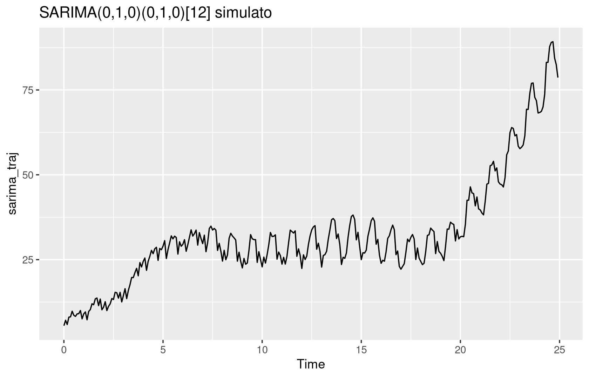
Torniamo ora al secondo punto di vista annunciato in apertura: la struttura di autocorrelazione dei modelli ARIMA. Sapere in anticipo che forma ci si aspetta dalla ACF (e dalla PACF, la funzione di autocorrelazione parziale, che avrai eventualmente incontrato nel laboratorio) è uno strumento diagnostico prezioso per orientarsi nella scelta dell’ordine \((p,q)\) di un modello, prima ancora di stimarlo.
La funzione di autocorrelazione di un ARIMA(p,d,q) soddisfa le equazioni ricorsive di Yule-Walker: \[ C(k) = \sum_{i=1}^{p} \alpha_i\, C(k-i) \qquad \text{per } k - p > q. \]
Da queste equazioni si ricava un risultato qualitativo importante per un ARIMA(p,0,q) stazionario:
Prova a rispondere prima di guardare i grafici seguenti: quale forma ti aspetti per la ACF di un MA(2) puro? E per un AR(2) puro? In particolare: quale delle due ACF ti aspetti che si annulli bruscamente oltre un certo ritardo, e quale invece che decada gradualmente senza mai toccare zero esattamente?
library(patchwork)
set.seed(123)
ar1 <- arima.sim(model = list(ar = 0.8), n = 200)
(autoplot(ar1, main = "AR(1)") / ggAcf(ar1, main = "ACF"))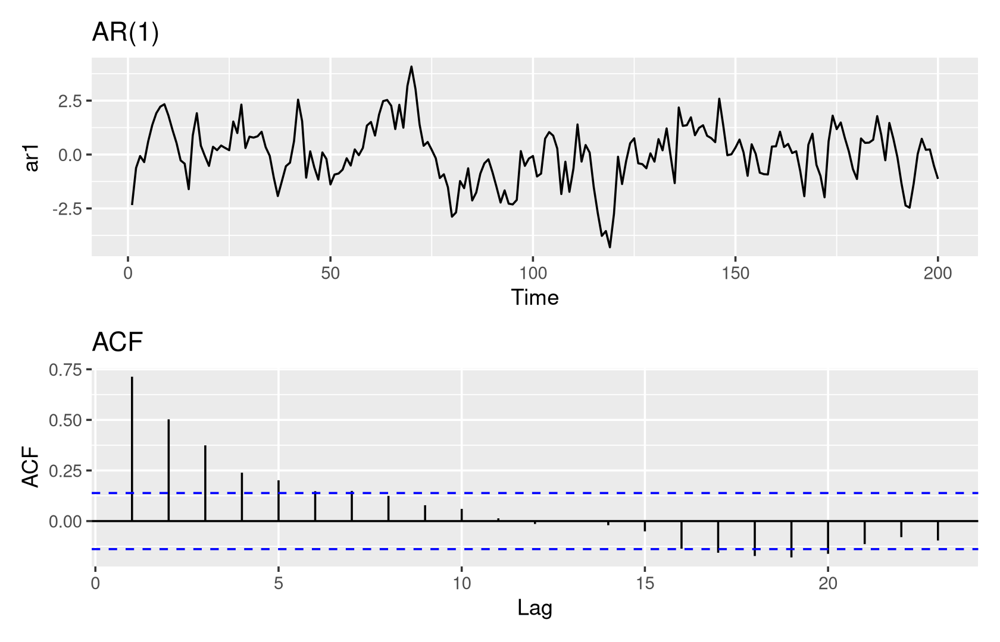
set.seed(123)
ar3 <- arima.sim(model = list(order = c(3,0,0), ar = c(0.6, 0.2, 0.1)), n = 200)
(autoplot(ar3, main = "AR(3)") / ggAcf(ar3, main = "ACF"))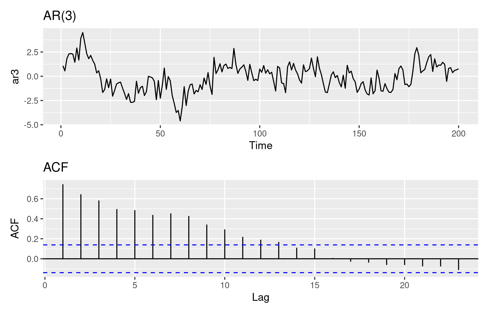
set.seed(123)
ma1 <- arima.sim(model = list(order = c(0,0,1), ma = 0.6), n = 200)
(autoplot(ma1, main = "MA(1)") / ggAcf(ma1, main = "ACF"))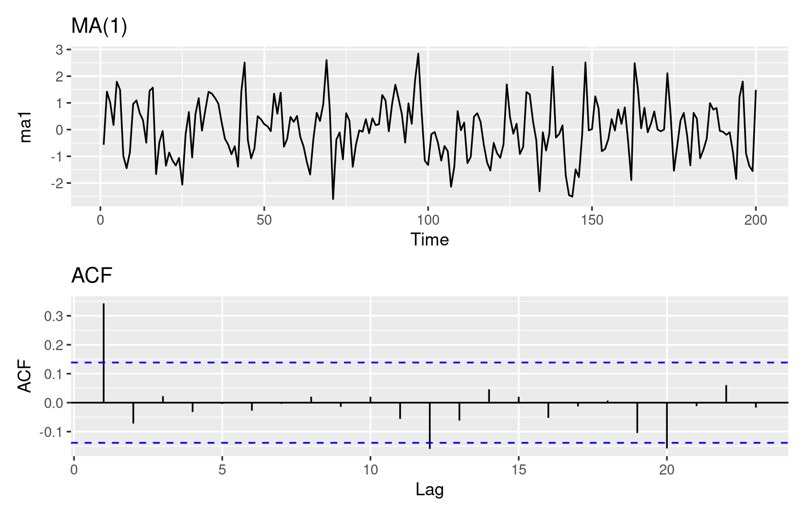
set.seed(123)
ma4 <- arima.sim(model = list(order = c(0,0,4), ma = c(0.6, 0.3, 0.8, 0.8)), n = 200)
(autoplot(ma4, main = "MA(4)") / ggAcf(ma4, main = "ACF"))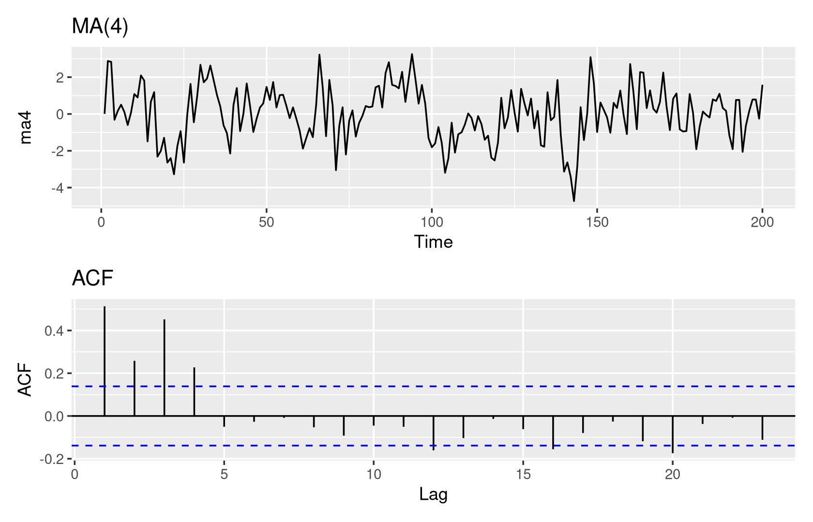
set.seed(123)
arma24 <- arima.sim(model = list(order = c(2,0,4), ar = c(0.7, 0.1), ma = c(0.6, 0.3, 0.8, 0.8)), n = 200)
(autoplot(arma24, main = "ARIMA(2,0,4)") / ggAcf(arma24, main = "ACF"))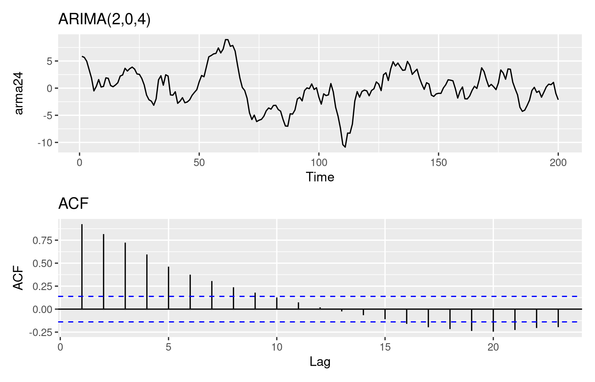
Confronta ora la tua previsione con i grafici: nella ACF del MA(1) l’autocorrelazione è significativa solo al ritardo 1 e crolla bruscamente a zero da lì in poi (troncatura al ritardo \(q=1\)); nella ACF del MA(4) la troncatura avviene al ritardo 4. Nelle ACF degli AR, invece, non c’è mai un taglio netto: l’autocorrelazione decresce gradualmente (in modo esponenziale, eventualmente oscillando di segno se le radici del polinomio caratteristico sono complesse), restando diversa da zero per molti ritardi. Nel caso misto ARIMA(2,0,4), la ACF combina i due comportamenti ed è più difficile da leggere a colpo d’occhio.
Nella pratica, raramente ci si trova in un caso puramente AR o puramente MA: la maggior parte delle serie reali produce una ACF “intermedia”, difficile da attribuire a colpo d’occhio a un ordine \((p,q)\) preciso. Per questo, come vedremo nella sezione sulla selezione del modello, ci si affida a criteri automatici (AIC/BIC/AICc, auto.arima()) più che alla sola ispezione della ACF.
Fissato l’ordine \((p,d,q)\), resta il problema di stimare i parametri \((\hat\alpha_i)_{i=1,\ldots,p}\), \((\hat\beta_j)_{j=1,\ldots,q}\). Due approcci:
arima().ar.yw().Come già visto nel capitolo 10 per ETS, minimizzare l’SSE sotto l’ipotesi di rumore gaussiano equivale a massimizzare la verosimiglianza (MLE): è lo stesso principio applicato qui.
serie_diff <- diff(log(AirPassengers))
fit_arima <- arima(serie_diff, order = c(1, 0, 0))
fit_yw <- ar.yw(serie_diff, order.max = 1)
cat("alpha stimato via SSE/MLE (arima()): ", round(fit_arima$coef[1], 5), "\n")alpha stimato via SSE/MLE (arima()): 0.19967 cat("alpha stimato via Yule-Walker (ar.yw()):", round(fit_yw$ar, 5), "\n")alpha stimato via Yule-Walker (ar.yw()): 0.19975 Sulla serie diff(log(AirPassengers)), i due metodi danno stime quasi identiche (\(\hat\alpha \approx 0.1997\) in entrambi i casi): non è un caso raro, i due approcci tendono ad allinearsi bene su serie con abbastanza osservazioni. La raccomandazione pratica generale resta comunque di usare MLE come riferimento, perché è l’approccio più generale (si estende naturalmente a modelli ARMA misti, mentre Yule-Walker è pensato soprattutto per la parte puramente autoregressiva) e più standard nella pratica statistica.
Nella stima reale, a differenza della definizione teorica “a media zero” usata per semplicità in questo capitolo, spesso si stima anche un parametro di media/intercetta più generale: arima() include automaticamente un termine di questo tipo a meno che non venga esplicitamente disattivato.
arima() e ar.yw() differiscano maggiormente?Una volta stimati i parametri, si usa la ricorsione del modello per proiettare le previsioni nel futuro: \[ \hat y_{T+h} = \sum_{i=1}^{p} \hat\alpha_i\, \hat y_{T+h-i} + \sum_{j=1}^{q} \hat\beta_j\, \hat\varepsilon_{T+h-j}. \]
Per la previsione puntuale, i residui futuri (non ancora osservati) vengono posti a zero: \(\hat\varepsilon_{T+h-j}=0\) quando \(T+h-j>T\). È l’analogo, per gli ARIMA, di quanto già visto per ETS: la previsione puntuale è il miglior valore atteso condizionato al passato, e l’errore di previsione futuro, non essendo ancora realizzato, ha valore atteso nullo.
Gli intervalli di predizione si ottengono propagando l’incertezza del modello stimato, in due modi possibili — analoghi a quelli già incontrati nei capitoli 7 e 10:
fit_ar1 <- arima(diff(log(AirPassengers)), order = c(1, 0, 0))
fc_param <- forecast(fit_ar1, h = 12)
autoplot(fc_param, main = "Previsione AR(1), intervalli parametrici")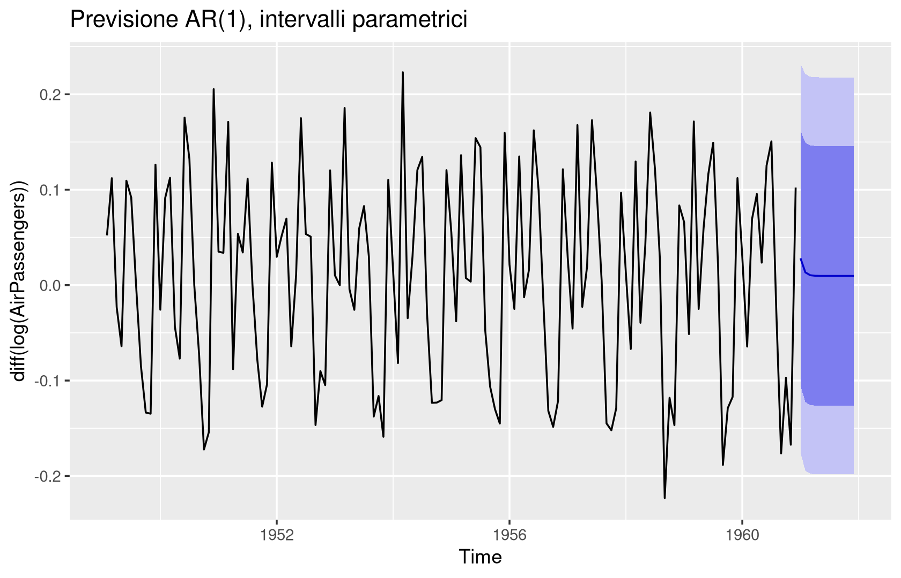
fc_boot <- forecast(fit_ar1, bootstrap = TRUE, h = 12)
autoplot(fc_boot, main = "Previsione AR(1), intervalli bootstrap")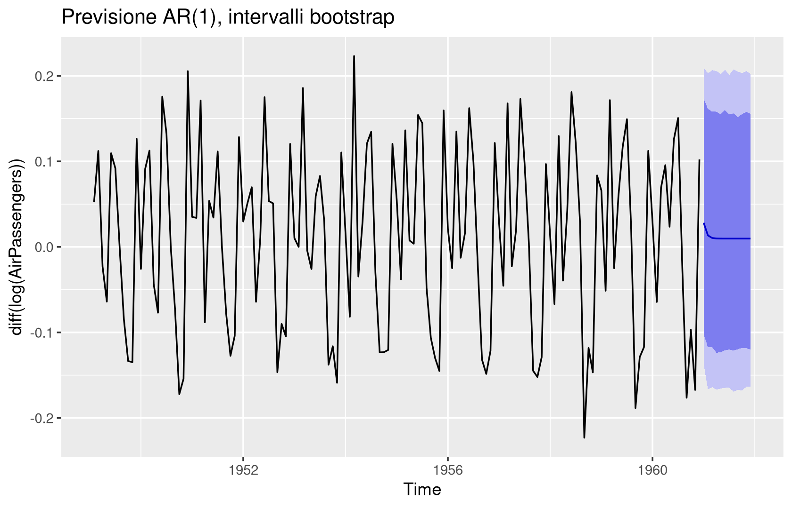
Sulla serie diff(log(AirPassengers)), gli intervalli parametrici e bootstrap risultano qui praticamente equivalenti — coerentemente con quanto già osservato più volte nel corso: quando l’ipotesi di gaussianità dei residui è ragionevole, i due approcci producono intervalli molto simili, e la scelta tra i due è più una questione di robustezza a violazioni dell’ipotesi (dove il bootstrap è preferibile) che di risultato atteso in condizioni “normali”.
Come scegliere l’ordine \((p,d,q)(P,D,Q)\) quando non è noto a priori? È lo stesso problema di selezione del modello incontrato più volte nel corso — con KNN (capitolo 4, 6), con il grado polinomiale nella regressione (capitolo 6), con la scelta di \(\lambda\) in Ridge/LASSO (capitolo 8): bilanciare bontà di adattamento (che tende ad aumentare con la complessità) e complessità del modello (che aumenta la varianza), per minimizzare l’errore di generalizzazione.
Due approcci complementari, entrambi già visti nei capitoli precedenti:
In R, la funzione auto.arima() automatizza (parte del) processo:
fit_auto <- auto.arima(log(AirPassengers))
summary(fit_auto)Series: log(AirPassengers)
ARIMA(0,1,1)(0,1,1)[12]
Coefficients:
ma1 sma1
-0.4018 -0.5569
s.e. 0.0896 0.0731
sigma^2 = 0.001371: log likelihood = 244.7
AIC=-483.4 AICc=-483.21 BIC=-474.77
Training set error measures:
ME RMSE MAE MPE MAPE MASE
Training set 0.0005730622 0.03504883 0.02626034 0.01098898 0.4752815 0.2169522
ACF1
Training set 0.01443892fc_auto <- forecast(fit_auto, h = 24)
autoplot(fc_auto, main = "Previsione con auto.arima() su log(AirPassengers)")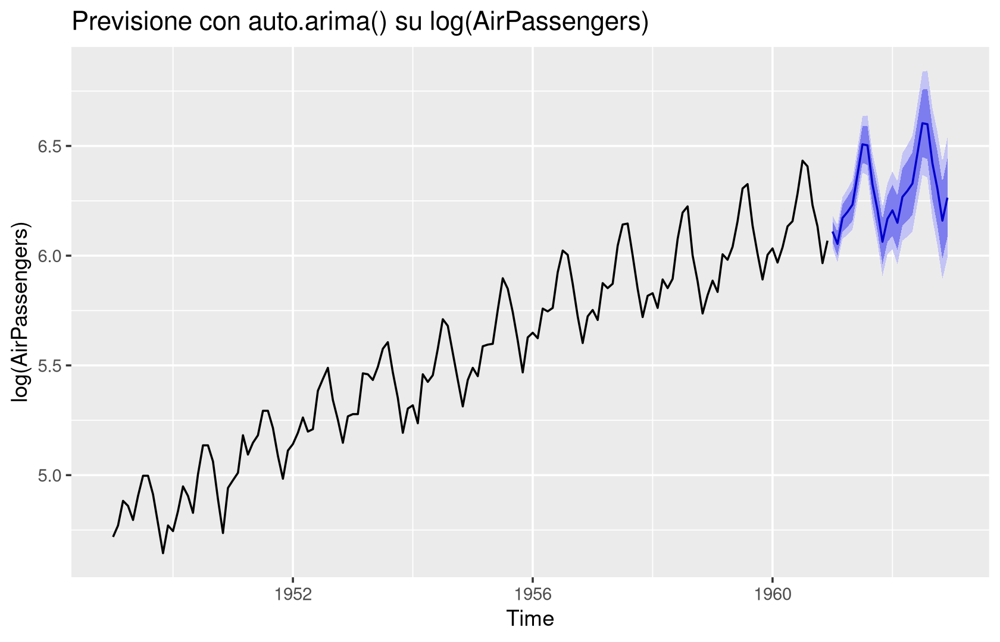
Osserva l’ordine \((p,d,q)(P,D,Q)_s\) selezionato automaticamente e il relativo AICc riportato in summary(). Come per ogni procedura di selezione automatica del modello incontrata nel corso, auto.arima() è uno strumento utilissimo ma non infallibile: resta buona pratica confrontare il risultato con l’ispezione grafica della serie e della ACF, e — soprattutto — validare la scelta con una cross-validation indipendente, come nella prossima sezione.
auto.arima() non esplora l’intero spazio dei modelli possibili (soprattutto in modalità stepwise, l’impostazione predefinita): può convergere a un ottimo locale piuttosto che al migliore modello in assoluto secondo AICc. Non sostituisce quindi il giudizio critico, ma lo velocizza.
Concludiamo il capitolo — e il blocco sulle serie storiche — con un confronto diretto tra ETS e ARIMA sulla stessa serie, log(AirPassengers), usando sia l’errore di training sia la cross-validation rolling-origin. È l’occasione per una lezione metodologica che vale ben oltre le serie storiche.
library(forecast)
ts_data <- log(AirPassengers)
fit_snaive <- snaive(ts_data)
fit_ets <- ets(ts_data, model = "MAM")
fit_arima <- Arima(ts_data, order = c(0,1,1), seasonal = c(0,1,1))
forecast_ets <- function(y, h) forecast(ets(y, model = "MAM"), h = h)
forecast_snaive <- function(y, h) forecast(snaive(y), h = h)
forecast_arima <- function(y, h) forecast(Arima(y, order = c(0,1,1), seasonal = c(0,1,1)), h = h)
e_snaive <- tsCV(ts_data, forecastfunction = forecast_snaive, h = 24)
e_ets <- tsCV(ts_data, forecastfunction = forecast_ets, h = 24)
e_arima <- tsCV(ts_data, forecastfunction = forecast_arima, h = 24)
risultati <- data.frame(
Metodo = c("Snaive", "ETS(MAM)", "ARIMA(0,1,1)(0,1,1)[12]"),
RMSE_train = c(sqrt(mean(fit_snaive$residuals^2, na.rm = TRUE)),
sqrt(mean(fit_ets$residuals^2)),
sqrt(mean(fit_arima$residuals^2))),
RMSE_CV = c(sqrt(mean(e_snaive^2, na.rm = TRUE)),
sqrt(mean(e_ets^2, na.rm = TRUE)),
sqrt(mean(e_arima^2, na.rm = TRUE)))
)
print(risultati, digits = 3) Metodo RMSE_train RMSE_CV
1 Snaive 0.1346 0.2008
2 ETS(MAM) 0.0065 0.1388
3 ARIMA(0,1,1)(0,1,1)[12] 0.0350 0.0832Il risultato è, volutamente, sorprendente. Sul training set, ETS(MAM) ha di gran lunga l’RMSE più basso — se ci si fermasse qui, sembrerebbe il vincitore netto, con un margine enorme sia su Snaive sia su ARIMA. Ma in cross-validation rolling-origin — cioè valutando le previsioni su dati che il modello non ha usato per stimarsi — il quadro si ribalta quasi completamente: ARIMA generalizza meglio di ETS, che risulta sorprendentemente vicino a Snaive.
Questo è un monito diretto contro il giudicare i modelli solo sull’errore di training, esattamente il rischio di overfitting incontrato ripetutamente nei capitoli 4, 6 e 8. Va notato, come osservazione sfumata, che ETS ha pochi parametri (livello, trend, stagionalità: tipicamente 3-4) e quindi in linea di principio non dovrebbe fare overfitting in modo così marcato — eppure qui il divario training/CV è comunque enorme, segno che anche un modello parsimonioso può adattarsi eccessivamente bene alle particolarità della serie osservata, se non validato correttamente.
C’è anche un collegamento diretto al primissimo capitolo sulle serie storiche (capitolo 9): lì, tra i modelli elementari (naive, media, drift, season naive), il Season Naive risultava il migliore. Qui, confrontato con modelli molto più sofisticati, Season Naive risulta il peggiore. Il cerchio si chiude: la sofisticazione del modello aiuta, ma solo se validata correttamente — e il ranking relativo tra modelli dipende fortemente dal metro di giudizio (training vs CV) e dal confronto usato.
Un dettaglio pratico ulteriore, visibile tracciando l’RMSE di CV in funzione dell’orizzonte di previsione \(h\): a orizzonti lunghi (attorno a \(h=20\)), ETS smette di performare bene e torna vicino a Season Naive, mentre ARIMA (in questo esempio specifico) mantiene prestazioni relativamente buone anche a lungo termine.
rmse_h <- data.frame(
h = 1:24,
Snaive = sqrt(colMeans(e_snaive^2, na.rm = TRUE)),
ETS = sqrt(colMeans(e_ets^2, na.rm = TRUE)),
ARIMA = sqrt(colMeans(e_arima^2, na.rm = TRUE))
)
matplot(rmse_h$h, rmse_h[, -1], type = "o", pch = 1,
xlab = "Orizzonte di previsione h", ylab = "RMSE di CV",
main = "RMSE di CV al variare dell'orizzonte, log(AirPassengers)")
legend("bottomright", legend = c("Snaive","ETS","ARIMA"), col = 1:3, lty = 1, pch = 1)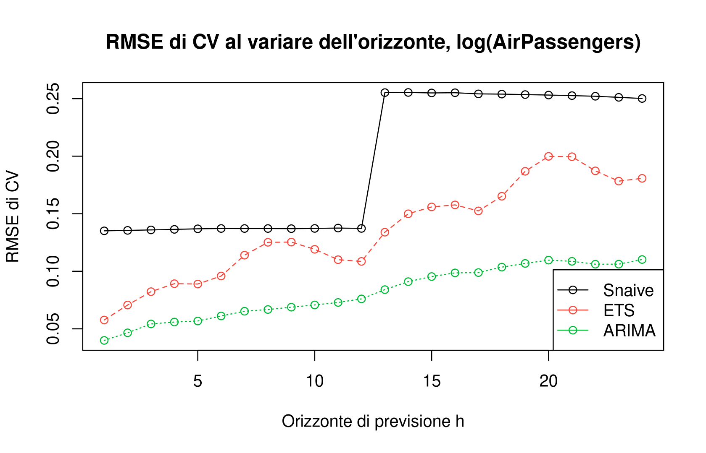
| Aspetto | ETS | ARIMA |
|---|---|---|
| Trend | Esplicito (A/M, eventualmente smorzato) | Solo dopo differenziazione |
| Stagionalità | Esplicita | Solo dopo differenziazione stagionale |
| Interpretabilità | Molto alta (pochi parametri, ciascuno con significato chiaro) | Moderata/bassa (molti parametri, ruolo individuale poco trasparente) |
| Serie moltiplicative | Gestite nativamente (basta scegliere M) | Solo indirettamente, tramite trasformazione logaritmica |
Vale la pena sottolineare due limiti di ARIMA discussi esplicitamente a lezione, che completano la tabella:
arima()) o Yule-Walker (ar.yw()); la selezione dell’ordine è lo stesso problema bias-varianza già visto con KNN, PCR e regolarizzazione, affrontabile con AIC/BIC/AICc o cross-validation rolling-origin.L’obiettivo di questo laboratorio, come degli altri del libro, non è scrivere codice da zero, ma eseguire, confrontare e interpretare output e grafici già pronti.
library(feasts)
set.seed(42)
t <- 1:150
serie_trend <- ts(t + rnorm(150, sd = 5))
serie_rw <- arima.sim(model = list(order = c(0,1,0)), n = 150)
serie_ar <- arima.sim(model = list(ar = 0.5), n = 150)
par(mfrow = c(1, 3))
plot(serie_trend, main = "Trend + rumore")
plot(serie_rw, main = "Random walk")
plot(serie_ar, main = "AR(1), alpha=0.5")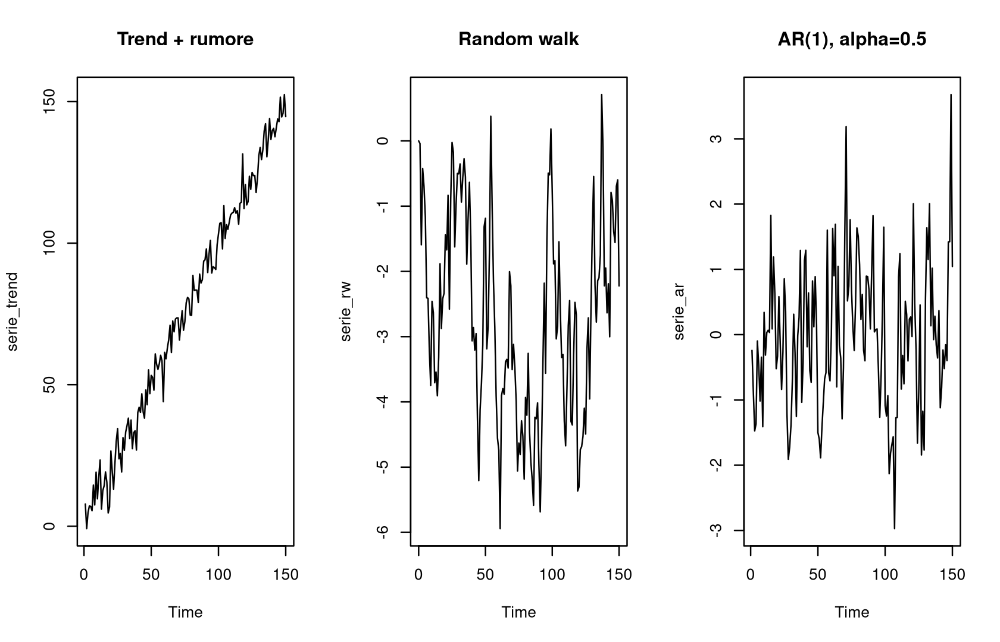
acf() per ciascuna delle tre serie. La forma della ACF conferma o smentisce la tua impressione visiva?unitroot_kpss() e unitroot_pp() alle tre serie. I due test concordano tra loro? Concordano con la tua impressione iniziale?AP <- AirPassengers
kable_like <- function(x) c(KPSS = unitroot_kpss(x)[2], PP = unitroot_pp(x)[2])
rbind(
Originale = kable_like(AP),
Diff1 = kable_like(diff(AP)),
Diff2 = kable_like(diff(diff(AP))),
Diff3 = kable_like(diff(diff(diff(AP))))
) KPSS.kpss_pvalue PP.pp_pvalue
Originale 0.01 0.10
Diff1 0.10 0.01
Diff2 0.10 0.01
Diff3 0.10 0.01var(). Cosa suggerisce questo esperimento sul principio “troppa differenziazione butta via informazione”?set.seed(7)
misteriosa_A <- arima.sim(model = list(ar = c(0.6, -0.2)), n = 300)
misteriosa_B <- arima.sim(model = list(ma = c(0.7, 0.4)), n = 300)
ggAcf(misteriosa_A, main = "Serie A")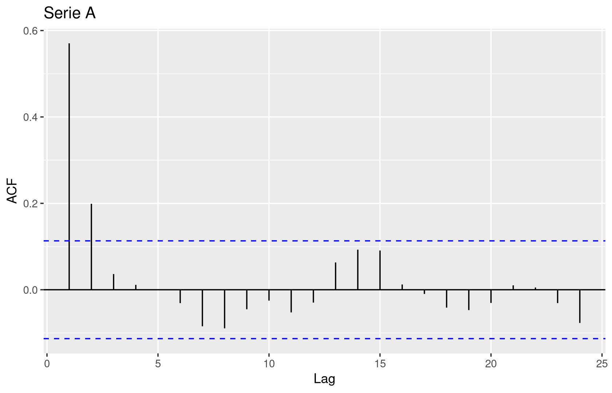
ggAcf(misteriosa_B, main = "Serie B")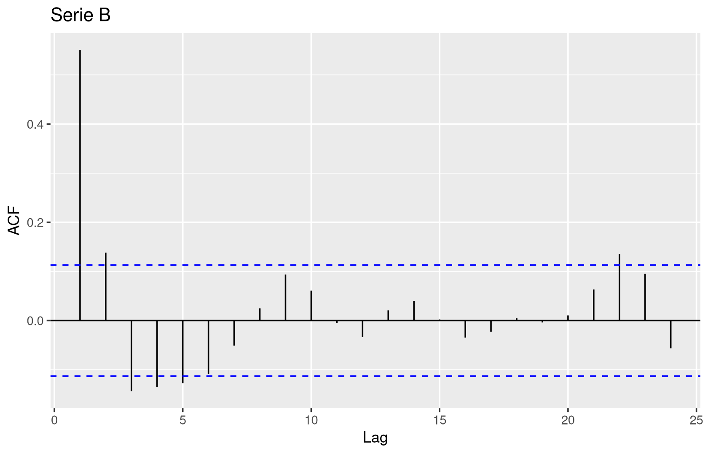
Ripeti l’analisi di confronto ETS vs ARIMA di questo capitolo sulla serie nottem (temperature mensili di Nottingham, senza trasformazione logaritmica) al posto di log(AirPassengers).
AirPassengers si ripete anche su nottem? Se la risposta è diversa, quale caratteristica della serie (ad esempio l’assenza di un trend marcato) potrebbe spiegarlo?Con questo capitolo si chiude non solo il blocco sulle serie storiche, ma l’intero percorso di questo libro. È utile, a questo punto, guardare indietro e riconoscere quanto pochi principi metodologici siano ricomparsi, sotto forme diverse, in contesti apparentemente lontanissimi tra loro.
Tutto è iniziato, nel capitolo 1, con l’osservazione che un indicatore statistico è quasi sempre il minimizzatore di una funzione di perdita empirica (ERM): la media minimizza la perdita quadratica, la mediana quella assoluta. Questa stessa idea è ricomparsa nel WCSS del \(k\)-means (capitolo 2), nel rischio atteso dei classificatori (capitolo 4-5), nell’SSE della regressione lineare (capitolo 6-7) e, in questo blocco finale, nell’SSE di ETS e ARIMA: cambia il modello, cambia la forma della perdita, ma il principio — scegliere i parametri minimizzando un errore empirico — resta identico.
Accanto all’ERM, un secondo filo conduttore è stato quello delle distanze: dalla geometria delle palle unitarie del capitolo 1, alla scelta della metrica nel clustering (capitolo 2) e in KNN (capitolo 4, 6), fino alla geometria della sparsità di LASSO (capitolo 8). Anche nelle serie storiche la nozione di “vicinanza” — questa volta temporale, non tra osservazioni multivariate — ha giocato un ruolo analogo: l’autocorrelazione altro non è che una misura di quanto due osservazioni “vicine nel tempo” si assomiglino.
Il terzo filo conduttore è la tensione tra adattamento ai dati e generalizzazione, formalizzata nel compromesso bias-varianza (capitolo 4, 6) e affrontata sistematicamente con la cross-validation (capitolo 4, 6, 8, e infine la sua variante rolling-origin nei capitoli 9-11). Il confronto finale ETS vs ARIMA di questo capitolo ne è forse l’esempio più vivido dell’intero corso: un modello nettamente migliore in training può essere nettamente peggiore fuori campione, e solo una validazione onesta lo rivela.
Infine, il filo del ragionamento bayesiano vs frequentista, introdotto sistematicamente nel capitolo 5 e ripreso nel capitolo 7 per gli intervalli di confidenza, è riaffiorato anche qui: negli intervalli di previsione parametrici vs bootstrap di ETS e ARIMA, nella scelta tra stima per massima verosimiglianza e stima per momenti (Yule-Walker), e più in generale nell’atteggiamento — che dovrebbe ormai essere diventato un riflesso — di chiedersi sempre quali assunzioni stiamo facendo su un modello prima di fidarci ciecamente del numero che restituisce.
Questi quattro fili — ERM, distanze, generalizzazione/cross-validation, ragionamento bayesiano/frequentista — non sono quattro argomenti separati del programma, ma quattro modi di guardare allo stesso problema di fondo: estrarre da dati osservati, inevitabilmente rumorosi e parziali, un modello che sia utile per descrivere, prevedere o decidere. Se a questo punto del corso riconosci questi fili quando riappaiono in un contesto nuovo — un nuovo dataset, un nuovo algoritmo, un nuovo tipo di errore da minimizzare — l’obiettivo di questo libro, oltre a quello di ciascun singolo capitolo, può dirsi raggiunto.